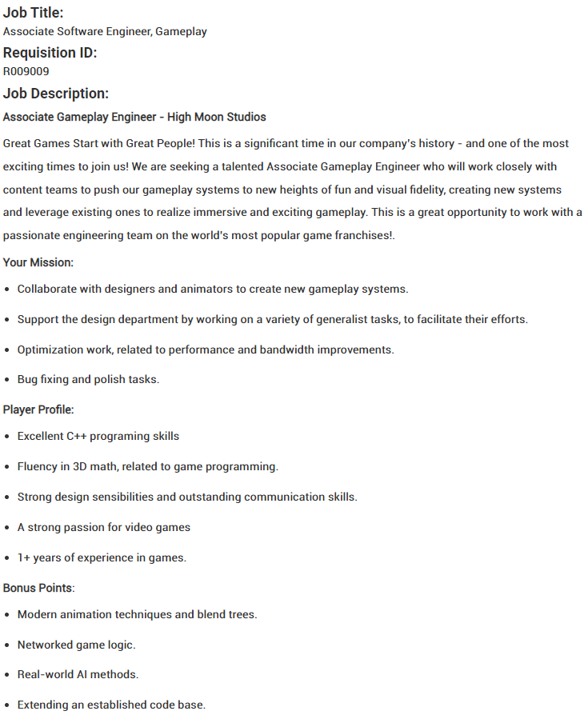
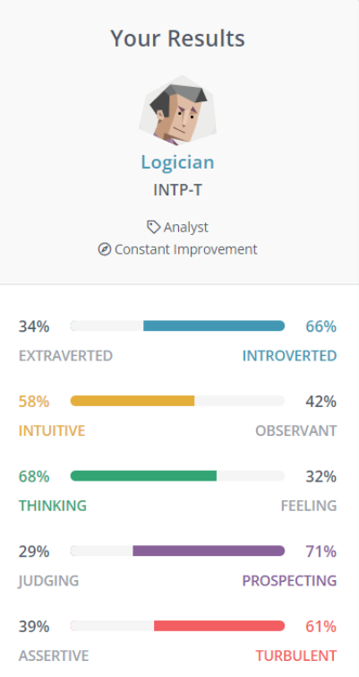

ID: s3943864
Email: s3943864@student.rmit.edu.au
GitHub Repository URL: https://github.com/Revqn0/myPortfolio
Github Pages URL: https://revqn0.github.io/myPortfolio/
Personal Information
My name is Florenz Ovel Bacting (or “Ovel” for short), I am in RMIT University studying Bachelor of Information Technology as a first-year student. I was born in the Philippines, a country in South-East Asia in 2003. I was educated upto Year 3 until my parents decided to move to Melbourne, Australia in 2012, I have been living and studying here ever since. I was once fluent in speaking my home language (Tagalog), however as the years passed I have slowly forgotten but I can still understand most phrases.
I am very interested in three aspects (Computers, world history and entrepreneurship), which take up most of my spare time, playing video games, researching about the history of the digital world, watching documentaries about historical events as well as how businesses started and what led to their success (most notably the Gymshark founders). Eventually in the future, I wish to take in my knowledge in IT as well as entrepreneurship to start a clothing industry business, starting with dropshipping then slowly transitioning into a production and retail business.
A (not so fun) fact about me is that I have made $4,000 in profit trading “Dogecoin” which is classified as a memecoin, a cryptocurrency that has no discernable purpose.
Interest in IT
What is your interest in IT? When did your interest in IT start?
At a very young age, I immediately became very fascinated in how various technologies work, how they were made, how to operate them and how it directly affects the world we live in right now. Moreover, I started avidly playing video games when I got my very first console (Playstation 3) in the late 2000s, with popular titles such as “Assassin's Creed” and “Call of Duty”. Along with having been exposed to a personal computer (PC) at an early age of 5, I was hooked with technology. To me, it became a place where you could be anyone and basically have freedom at your fingertips. As I progressed through my primary and secondary studies, that passion for technology has done nothing but pique my interest, I learned the behind the scenes in programs, how certain coding works to improve the functionality of the application. Overtime, I also undertook Business Studies in High School, where I learned how businesses implement various technologies to stay competitive against other industry “big dogs” in the ever changing digital world. Eventually, I specifically found what I wanted to study and do in the future. Combining my passion for how businesses work and how information technology can help businesses all over the world, I decided to pursue a Bachelor's Degree in IT, hoping to improve a business's operations through digital technology with my future career.
Was there a particular event or person that sparked your interest? Outline your IT experience (if any).
While there have been several experiences that helped me shape my interest in IT. A notable event was a casual conversation back in 2015 with a family friend, Raphael, who works for SAP Ariba, a software solution that enables suppliers and buyers to connect and communicate through a single platform, improving vendor management by introducing price-saving ways of procurement and simplifying business dealings. His job within the organisation was to ensure a healthy communication between the business and consulting team, as well as market their product to customers all around the globe. Immediately then, I decided that I was going to do something similar to the likes of that.
Aftershock PC Australia - Worked in a coordinated retail store environment over a one-week placement period. Worked full-time hours and assisted as a member of hardware repair and customer service. Throughout this period, I acquired an understanding of the hardware aspect of computers through building gaming systems and learning the different parts that make up a computer (CPU, GPU, RAM, etc.) and how they work together to run the system.
GraceWest Bible Church - Volunteered to be a multimedia operator for a local church. Tasks include putting up lyrics on the overhead screen, managing recordings and editing/creating PowerPoint slides. Operating video streaming systems such as BlackMagic Design (ATEM)
Why did you choose to come to RMIT?
Royal Melbourne Institute of Technology (or RMIT) is a global top 250 university, widely recognised as a good institute for tertiary education. Moreover, in terms of computer science and information systems, it is ranked 98th globally for Best Global World University Rankings 2021. Immediately, I knew that this was the right university for me, as I was pursuing a course around a mix of business studies and information technology. Other than the quality of education in RMIT, the university is also known for having a good reputation for being very professional and known for having a more “hands on” experience instead of mainly theory work like other universities, which perfectly suits my learning style.
What do you expect to learn during your studies?
Throughout my time at RMIT, I expect to learn and perhaps master a variety of coding languages, as well as factors that make good programmers “stand out” from ordinary programmers. Moreover, as a result of numerous group projects that will occur in the foreseeable future, I aspire to build on my communication and interpersonal skills, as well as the ability to work efficiently in a team, which will significantly assist me in my future career as a programmer.
My Ideal Job
Direct URL: https://careers.activision.com/job/R009009/Associate-Software-Engineer-Gameplay
Screenshot: https://imgur.com/a/4OUdcad
Associate Gameplay Engineer: (Activision/High Moon Studios)
“High Moon Studios is an award-winning studio developing for the Call of Duty® franchise, with past development on over 15 titles including Call of Duty: Modern Warfare, Bungie’s Destiny 2: Forsaken, and Transformers: Fall of Cybertron. We employ more than 100 people in Carlsbad, CA, a seaside city in San Diego County.”
This position works closely with content teams to push gameplay experiences to new levels of fun and visual fidelity. Tasks include creating new systems and improving existing ones to improve player experience through immersive gameplay.
Tasks include: working together with designers/animators in relation to improving gameplay, optimising work (such as performance and bandwidth improvements) and fixing known bugs to improve player experience
This position really grabs my interest because I was exposed to video games at a very young age (especially the Call of Duty franchise), so I figured it would be wonderful to work for the company that has basically made my childhood. Moreover, I can also further understand what comes into making these video games, the technicality behind it, and how each aspect of the development team is crucial in making a fun gameplay experience.
Skills/experience needed:
Excellent C++ programing skills
Fluency in 3D mathematics, related to game programming
Strong design sensibilities and outstanding communication skills
A strong passion for video games
1+ years of experience in games
Overall, the most important aspect needed for this position is a degree of mastery in the C++ coding language. Nowadays, most video games are developed with C++ because it allows the programmer to work directly with the DirectX software, “a series of application programming interfaces (API) that provide low-level access to hardware components like video cards, the sound card, and memory.” Furthermore, I am assuming applicants who want to be considered must have a high level of interpersonal skills, problem solving skills and great teamwork, in order to successfully communicate with their colleagues with regards to the project at hand.
Bonus points:
Modern animation techniques and blend trees
Networked game logic
Real-world AI methods
Extending an established code base
Current skills/experience:
Aftershock PC Australia, an award-winning PC builder business which opened in Australia in 2018, they offer a range of personal computers and laptops ranging from budget systems to high-spec machines. During Year 10, I undertook a one-week work placement in their West Melbourne branch, working in a coordinated retail store environment with full-time hours and assisted as a member of repair and customer service. Throughout this period, I acquired an understanding of the hardware aspect of computers through building gaming systems and learning the different parts that make up a computer (CPU, GPU, RAM, etc.) and how they work together to run the system. Moreover, throughout this time I worked with several other employees in a team-based environment, constantly solving problems that arise and maximising efficiency and effectiveness in the workplace. This placement greatly improved with how I present myself in a group, and how to take roles and responsibilities with good initiative.
Excellent understanding of video games, having been exposed to computers at a young age, there was no doubt that I would find my way into the vast world of gaming. With over a decade of experience with different games (especially first-person-shooters) I can confidently say that I would be a great fit in the working environment of High Moon Studios, knowing I will be on the same page as other employees in project work.
Personal plan:
The job position indicates that “excellent C++ skills” is needed, I have never tried the C++ programming language before, only trying other more basic languages such as Python (which I am learning now) Both languages are vastly different, C++ is a static-type language and Python is a dynamic-type language. Declaring variables vary in both of them. Moreover, C++ has a lot of features and a very difficult syntax compared to Python. Proper use of the C++ means that I need to know specific parts of the language to use in different situations, as well as understanding what a process will do to execute the code that I write.
Nonetheless, I am eager to start my C++ journey through Codecademy, an online interactive platform that offers coding classes with a variety of languages. I will use this to gain a basic understanding of C++. As I further my knowledge, coding bootcamps can also be another option, enabling me to focus on important aspects of coding and undertaking challenges.
Ultimately however, the key to mastering the language is constantly exposing yourself to work on applying my skills into real-world problems. Therefore, I will aspire to practice at least a few hours a week to hone my understanding about the language.
Personality Profile
Test 1: Myers-Briggs Personality Test (Logician, INTP-T)
Description:
According to the 16 personalities website, logicians are always thinking and often “lose themselves in thought”, ever constantly wondering about the mysteries of life. As a result, world-renowned philosophers such as René Descartes and Blaise Pascal have been logicians. Furthermore, some of the most influential scientists are also considered logicians, notably the likes of Albert Einstein and Charles Darwin.
Strengths:
Analytical: needing to analyse everything
Original: often comes up with innovative ideas
Open-minded/Curious: receptive to ideas that have reason
Objective: opposed to bias and misinformation
Weaknesses:
Disconnected: lost in own train of thought
Insensitive: believes that being logic-focused, and pragmatic is the best way to make decisions
Dissatisfied: trying to fix things that aren’t broken
Impatient: wants results fast
Perfectionist: always striving for flawlessness and perfection, can affect decision-making
Critique and Validity of test:
As a logician, working in teams may not look like an easy feat, however “they often do their best work in collaboration with other people.” Taking in strengths such as having the ability to look at things in a very analytical way can help improve both myself and the group as a whole. In addition, the capability of being open-minded can also assist in brainstorming innovative ideas that can greatly support the outcome of the project in question.
However, on the other hand, weaknesses such as being very logic minded can also negatively affect the working environment, like group morale and chemistry. In response, I have to put myself into a healthy “limbo” between being rational and emotional in order to get the best results possible. Overall, I strongly believe that the results that have been gathered from the test are mostly accurate, I accept that I am a logician. A person that is highly introverted, yet an analytical observer who may seem disconnected from reality as a result of being so deep in thought about random things, exploring concepts and learning how the world works.
Test 2: Honey and Mumford Learning Styles (Reflector)
Description:
One of Honey and Mumford’s learning styles is the reflector. They often learn through critical observation. Very thoughtful and passive when it comes to general discussions, considering all points made before offering one’s own views. Moreover, reflectors do not quickly jump to conclusions, preferring to gather various perspectives and sources before committing to any action.
Critique and Validity of test:
In my opinion, I believe that I am indeed a reflector, as I learn something best by first observing others do it in the right manner and consequently trying it myself. Therefore, I can convert the various advantages of being a reflector into great teamwork in a group project. Using strengths such as observing the playing field before jumping in, I can confidently come up with ideas that can work in favour of the project at hand and disregard other ideas that may not be so great.
Test 3: Extraversion/Intraversion Test

According to the results I am sort of in the middle of being an extrovert and introvert. Mutually enjoy being with large and small groups of people. In essence, I have built a balance “between actively involving myself in a large social network, and spending some quality time with a few intimate friends.” While having a social life is somewhat important to my life, ultimately it is not the most crucial thing. In terms of the consequence of this in teamwork, I strongly believe that it is advantageous, because while I may not always be the conversation-starter, it does not mean that I cannot be outgoing, still having the ability to effectively collaborate when needed and contribute appreciable ideas with the group.
My Project Idea
Overview:
SafeSpend® is a mobile app that is designed to keep track of one’s expenses throughout a period, specifically meant for those individuals who are conscious about their spending, the app will greatly assist them in ensuring that their own budgets are followed and avoid squandering. The app will allow them to log expenses, and sort them into specific sections (either by date, category, etc.) All of which will be stored in the local drive of their device, allowing for easy access, anywhere and anytime. Ultimately, the goal of this app is to improve people’s spending habits and help save money on things that they “need” not “want.”
Motivation:
The motivation behind this project idea is a result of a majority of casual teenage workers who work limited hours per week (including myself) not knowing how to spend their hard-earned cash. Some ways that indicate poor spending habits is as follows:
Frequently eating out at restaurants, fast food places (especially boba stores), or getting food delivered through services such as UberEats, Doordash, Menulog, etc.
According to Finder.com, “Australians are spending a whopping $2.6 billion each year on delivered meals and drinks, equating to an average individual spend of $1,590 each year.”
In addition to food, people are also mindlessly spending more than they can afford on clothing, electronics, shoes, especially those who are overpriced due to the “brand hype” (such as Supreme, Air Jordans, Off-White, etc.)
Therefore, I strongly believe that pursuing this project idea will generally have a positive impact in our society, predominantly the younger age groups, teaching them the true value of money and developing wise decision-making that can assist them in future endeavours.
Description:
In further detail, SafeSpend® is a mobile (iOS, Android) application that is available for free for everyone. However, it mostly targets kids and teenagers who are starting to get into earning money by themselves and buying their own things. The app will have a user-friendly interface that will follow Nielsen’s 10 Heuristics and Principles, a usability inspection method used to identify issues that may have arisen in regards to the user-interface of a system. This will ensure that usability issues are kept to a minimum, and if there are any, it will be easily resolved.
Some functional requirements that the application will include are:
Create logs of expenses
Search specific logs
Update existing logs
Delete logs
User can connect their credit/debit card to the app and transfer data on spending
User can generate a report to analyse their spending patterns, this can be in the form of graphs or spreadsheets
Currency conversion, the application will have a feature that can convert currencies for ease of use
Notifications, the app can send notifications to the user if given permission, such examples can be: monthly subscription reminders, fines, price deadlines, money owed, etc.
Some non-functional requirements that the application will include are:
Security, password or PIN generation, similar to the passcode, users can have the freedom to set a pin for the app in order to restrict unauthorised users who may have access to their phone. Moreover, an extra step of security can be that the app may lock itself if too many wrong attempts are taken.
Compatibility wise, the app is designed specifically for mobile phones on the iOS and Android operating systems, I believe that this is the best platform as individuals can assess their spending on the go, instead of having to sit down at a desktop/laptop setup every time.
Availability, as data is stored locally in the device, the app will work as intended with rare downtimes throughout the year.
Recoverability, the application can store and frequently backups of user data which can be easily retrieved in case of a system failure or data breach.
Development for the application will be created following a Software Development Life Cycle (SDLC) model called “Agile”, which essentially breaks down the product into small incremental builds that are provided in iterations. With each build, more and more features are added through software updates that will improve user experience and functionality. An advantage of this model is that it:
Is a realistic approach in developing software
Encourages teamwork across individuals
Developers are not overwhelmed by having to release every feature at once (gives them more flexibility)
Appropriate for either fixed or rapidly changing requirements
Gives development team adequate time to adapt to situations that arise
Keeps everyone on the same track within the project, instead of different people working on many things at once
Can deliver early prototypes of the program, giving time to analyse what is good, and what needs to improved upon
User feedback can be taken into account and solved in the next iteration/update of the application
Tools and Technologies:
MIT App Inventor will be the basis of my application, MIT is an app inventor is a cloud-based tool that enables individuals to create apps right in their web browser. I chose this software based on its numerous amounts of advantages such as:
The software is very simple to understand without needing an extensive knowledge on coding, with most tasks being done through a select and drop manner
Testing is made very easy as the application being developed can be regularly checked
Easy to get started, the website provides a variety of tutorials based on a user’s experience level, which helps users gain a basic understanding in building apps.
Skills required:
MIT App inventor uses block-type coding, which is fairly easy to understand in comparison to actual coding languages such as Java, Python, C, etc. I will use the tutorials provided on the site to learn how to get started and then assess what I can do with the website and also its drawbacks.
In terms of design, I will need to have an understanding of a good user interface and know the certain elements that make a specific user interface better than all the rest. Watching YouTube tutorials on the basics of UX design can help, as well as taking in already existing applications with good UX such as Amazon, Apple, and others can be an inspiration for my own application.
I believe it is feasible to find the resources and tools needed to create my own expenses tracker app, however a limitation I found is whether I can learn the skills needed in a reasonable timeframe.
Outcome:
Upon successful completion of the SafeSpend® app, people can easily track their income and expenses, allowing them to live with less stress, with no worries about unexpected expenses that come up and allows an understanding where their spending habits are weakest. Moreover, teenagers who use the app will be introduced early on to wise money organisation which will help them in the future as they transition away student responsibilities to adult responsibilities.
References:
Kolhatkar, S., 2022. Dogecoin Price Spike on April 13; popular meme cryptocurrency hits record price of $0.115. [online] Republic World. Available at:
Jonnalagadda, H., 2022. What is DirectX, and why does it matter for gaming?. [online] Windows Central. Available at:
Software Testing Help. 2022. Python Vs C++ (Top 16 Differences Between C++ And Python). [online] Available at:
Quora. 2022. Why is C++ harder to learn than Python? (I want to learn C++ but people tell me that C++ is three times harder to learn than Python). [online] Available at:
Quora. 2022. How is the RMIT?. [online] Available at:
16personalities.com. 2022. Free personality test, type descriptions, relationship and career advice | 16Personalities. [online] Available at:
Truity. 2022. All About the INTP Personality Type. [online] Available at:
Eln.co.uk. 2022. Honey and Mumford Learning Styles Quiz | Blog | ELN. [online] Available at:
Expert Program Management. 2022. Expert Program Management. [online] Available at:
Miller, J., 2022. Ways People Squander Their Money. [online] Solitaryroad.com. Available at:
Banney, A., 2022. Australians spend $1,590 each year on delivered food | finder.com.au. [online] finder.com.au. Available at:
Indeed Career Guide. 2022. 9 Nonfunctional Requirements Examples. [online] Available at:
Puzhevich, V., 2022. Functional vs Non-Functional Requirements: Key Differences. [online] SCAND. Available at:
Tutorialspoint.com. 2022. SDLC - Agile Model. [online] Available at: